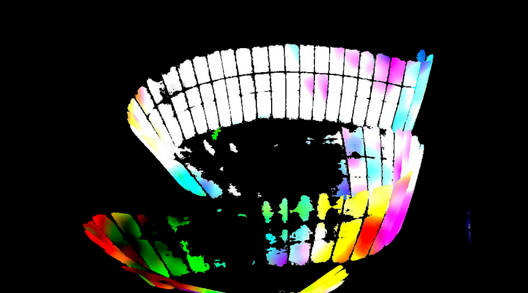
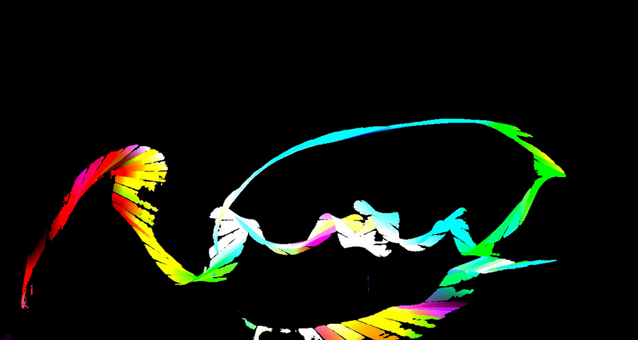
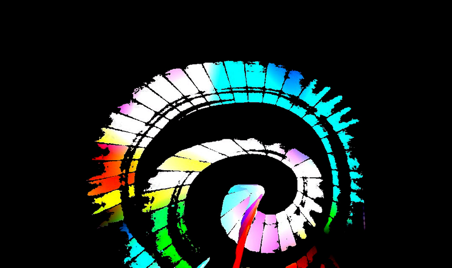
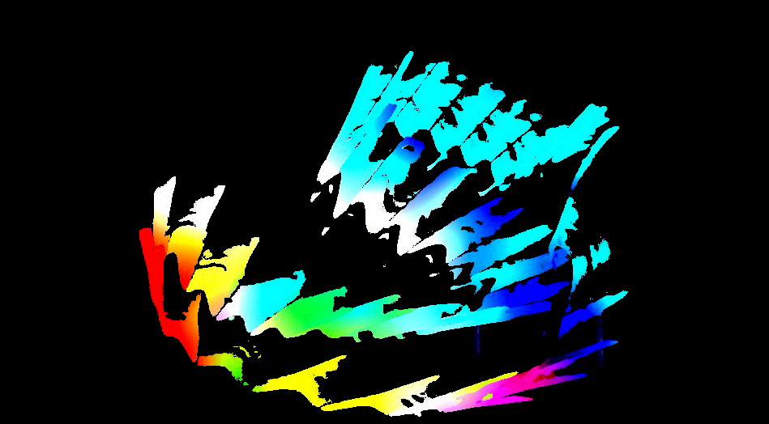
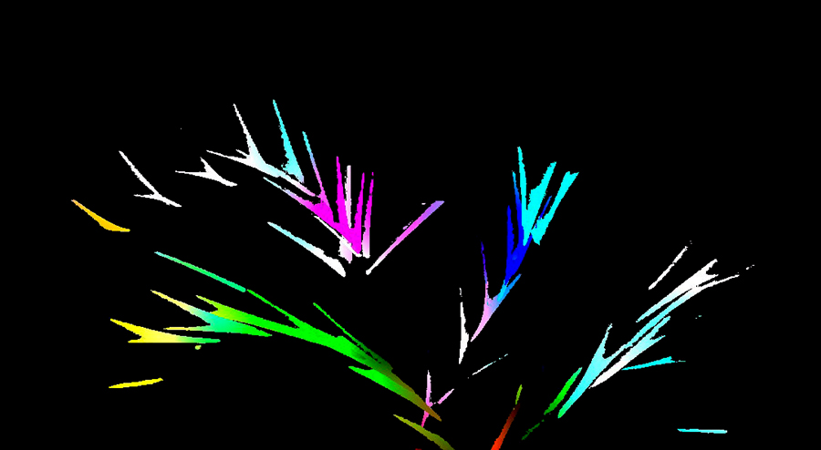
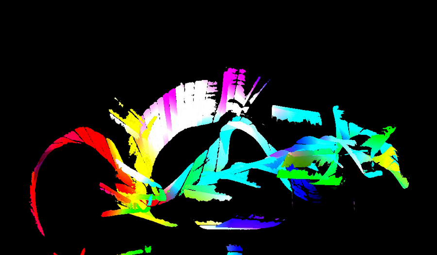

- GLOW PAINTING -
Glow Painting is an experience that allows you to "paint" with glowsticks and other light sources.
The great thing about glowsticks are their flexibility and light weight.
Other light sources create crazier effects, including making imprints of objects and people in the play space.
Soon, I'll be testing versions that use black light so used glowsticks can be used again and people can "paint" with other objects that glow.
It uses TouchDesigner and a webcam to pick up and translate the light into the images featured below.
GALLERY





